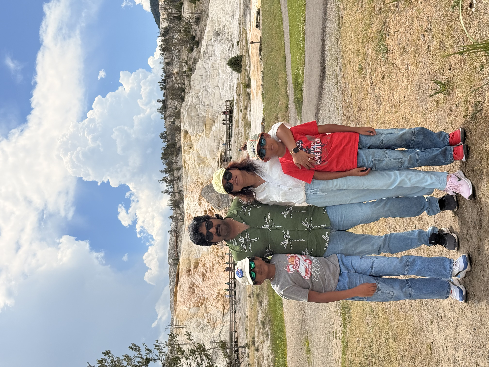
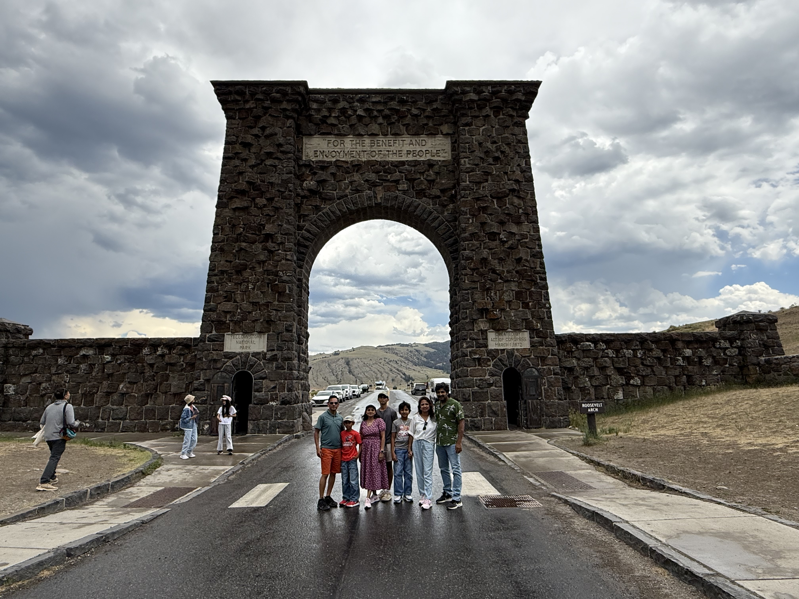
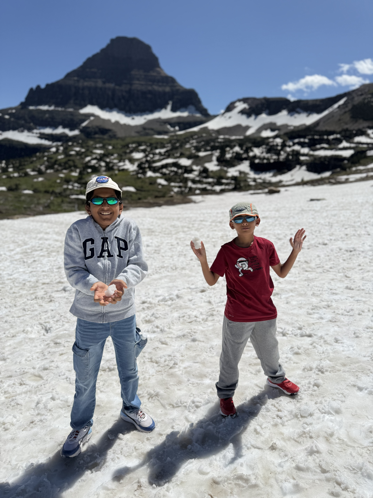
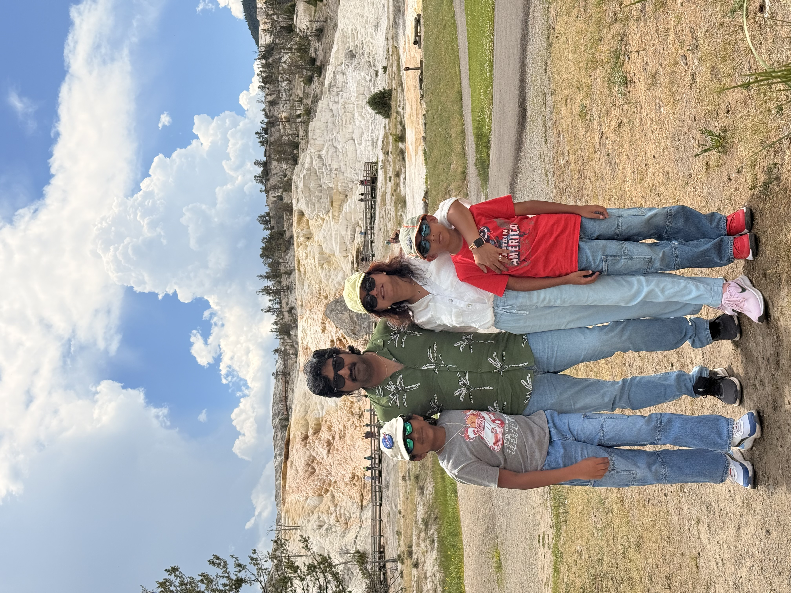
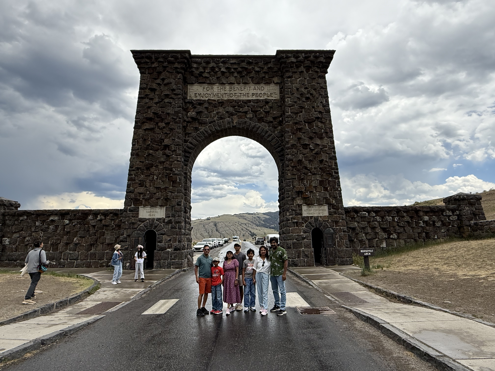
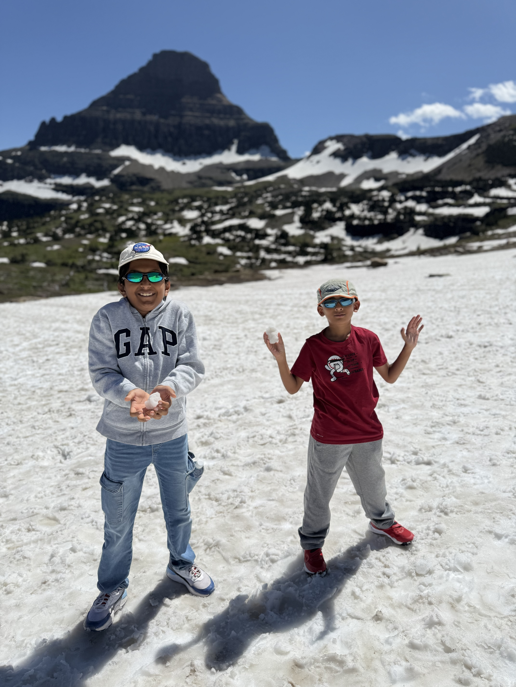

North US and my Cousin
Posted on Jul 7, 2025 by BPDABEST
Both me and vedish met first at the parking lot, along with our families. We all got on the shuttle to the airport together, and did everything till getting our rental car together in Denver. After that, we split up to each of us going in our own cars. We got to the AirBnB a little later, and it was a hunter's house with only ZONE BATHROOM!!! So we took a while to ready up the next morning, and we went to Grand teton Nationals Park. Pretty much just a lot of trees. That evening, we went to another AirBnB. This one was an apartment, with 3 bedrooms and 2 bathrooms. One bedroom had 2 bunk beds, the other had 1, and the masterbed had a king bed in it. I slept on the top bunk of one of the bunk beds, and I got to use the masterbath. Vedish slept on the other top bunk in the other room, and he used the other bath. We stayed there for 3 nights, and those days, we were going to Yellowstone Nathional Park!! The first day, my parents had to work, so Vedish left early and we left late. I didn't get to meet him at all that day, so it was boring in the car. But, that day, we saw a bunch of ggeysers and hot springs, including Old Faithful and the Great Prismatic Spring. The next day, we saw some more geysers, but that day was mostly about waterfalls. The next day was NO MORE GEYSERS!! We also moved over to another AirBnB. This one was practically a mansion, with 2 bathes and 4 beds! I slept competely alone, my parents slept in one, my cousin's brother slept in one (all alone), and Vedish's parent slept with Vedish in the last room (the master). This time, we were going to Glacier National Park! We got to wet our feet there a little, and we walked on glaciers (slippery) and hiked a lot. That final day, we flew home, but unluckily, Vedish's seat was WAY away from mine. So we met at the parking lot one last time, and bid farewell to each other.

 




